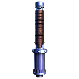

🟡 GOLDEN SENTINEL SABER
Vigilance in motion.
This yellow saber shines with the light of guardianship and adaptability.
Used by Jedi Sentinels and Temple Guards, it reflects balance between combat and intellect.
Suited for Form VI: Niman, a hybrid style that blends offense, defense, and Force techniques.
This saber is perfect for those who operate in the shadows, investigate mysteries, and protect the unseen.
Specifications:
- Length: 35.5 inches
- Weight: 1.2 lbs
- Activation: Push-button ignition
- Sound: Push ignition with flowing pitch modulation
- Blade Color: Yellow
- Hilt Material: Satin durasteel with golden accents
- Ideal For: Temple guards and sentinels
- Power Core: Kyber crystal calibrated for harmonic balance
- Form VI – Niman (Balanced, versatile, Force-integrated)
- Price: 850 credits
Specifications: